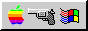
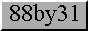

Remember: The internet is for cats.
/\_/\ ___
= o_o =_______ \ \ -Julie Rhodes-
__^ __( \.__) )
(@)<_____>__(_____)____/
If plagarism is frowned upon, then surely if you give attribution it isn't!
Used to be on Nekoweb!
====================================
Let's be honest. Nobody who codes in the style I do, or with the way I talk, is straight. Must be a small minority. Surely.
I'm an absolute dumpster fire when it comes to my identity.
I am:
abrosexual | My sexuality is fluid and change over time - hours, days, months, even years.
a demiboy | I feel partially (mostly) inclined towards being a man, however not fully. My head's somewhere else.
ambiamorous | I am comfortable in both monogamous (two people) and polyamorous (three or more people) relationships. It doesn't matter to me.
a femboy | Catch me in real life. I will act in a feminine way. I may even dress feminine. I'm still not a woman!